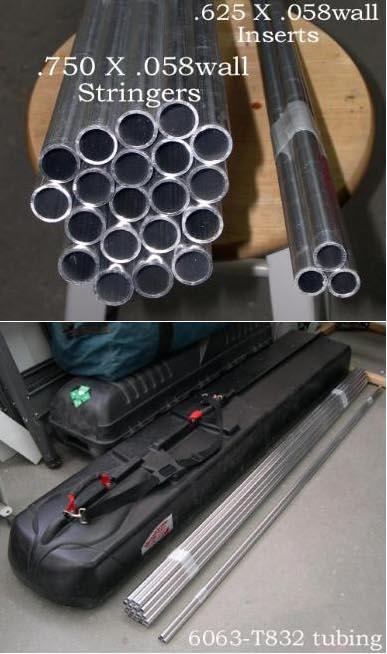

| Aluminum Stringers ( Sea Ranger) | Menu Last Page Next Page |
|  |
Stringer Overview
Both 6063-T832 and 6061-T6 tubing are used to
construct the kayaks in this manual. Both grades are used by
commercial builders, though 6063-T832 has a higher corrosion
resistance. Both have a 40,000psi tensile strength. See Contacts page
for suppliers.
Stringers are .750 ( 3/4") (19mm) X .049 (1.25mm) or .058 (1.47mm) wall tubing. 144ft. required = (8 tubes X 18ft) Includes Inwales Inserts are .625 ( 5/8") ( 15.9mm) X .049 or .058 wall tubing. (18ft required) Forward Deck Stringers (optional) .5 (1/2") X .049 or .058 wall tubing (6ft required) Tools
Pipe Cutter |